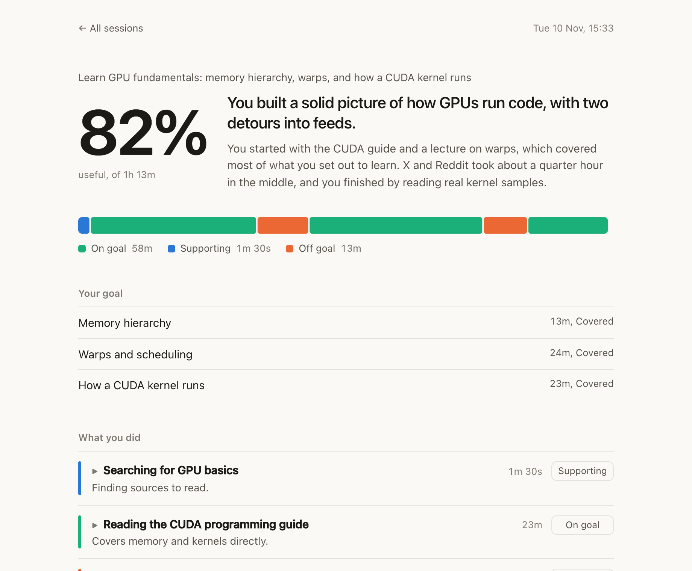
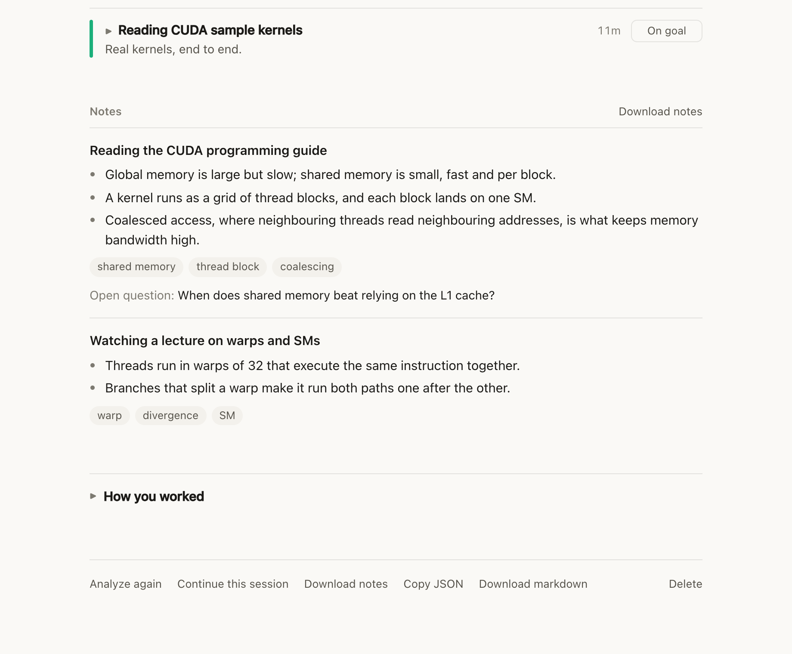
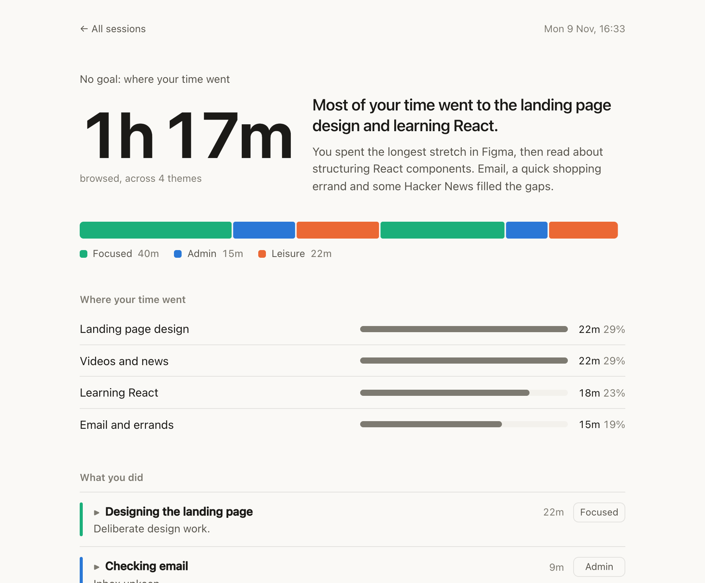
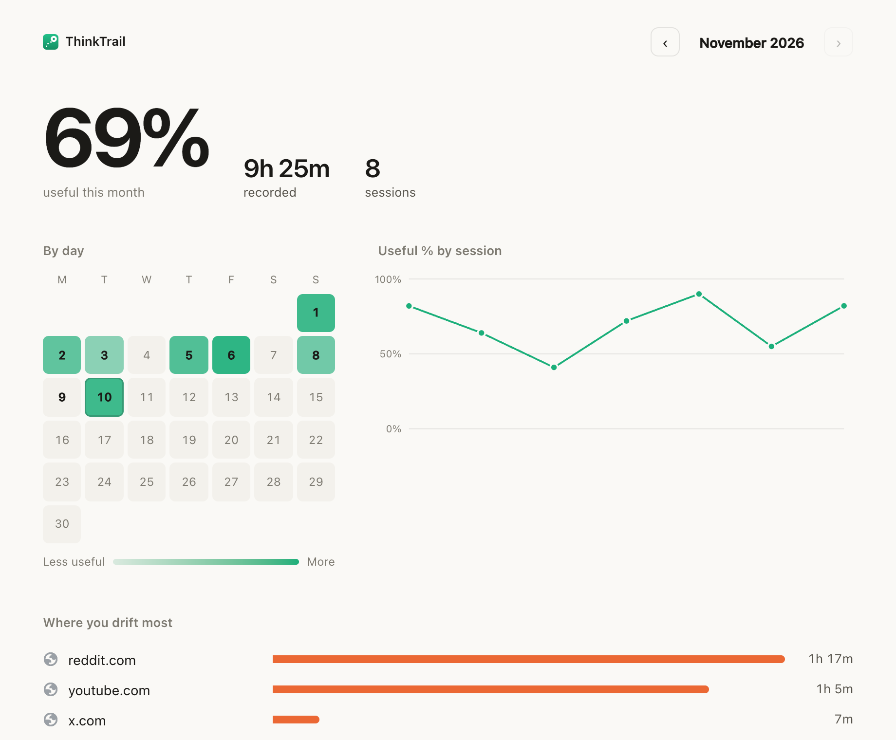
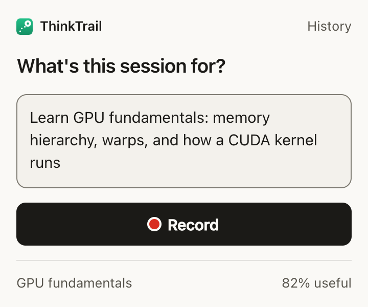

Say what a session is for, press Record, and browse. When you stop, ThinkTrail shows how much of your time served that goal, what pulled you away, and study notes from what you read.
Free. For desktop Chrome and other Chromium browsers.
ThinkTrail only records when you ask it to, and only in Chrome.
Click the toolbar icon or press ⌘⇧K (Ctrl+Shift+K on Windows) and write your goal, like "Learn how GPUs schedule warps". Or leave it blank to just track your time.
It notes which pages you visit and for how long. Step away and it pauses by itself; come back and it carries on.
It's analyzed as soon as you stop: your useful time, what you did, where you drifted, and notes from what you read.
Every activity gets a label, and the timeline shows the whole session at a glance. If a label is wrong, change it, and the numbers update.

Key takeaways, terms and open questions, written from the pages that served your goal. Download them as Markdown for Obsidian, Notion or anywhere else.

Record without a goal and the report groups your time into themes, and into focused work, admin and leisure. No judgment, just the picture.

History colors each day by how focused it was, and shows what you learned most, where the time went, and the sites you drift to.
Haven't recorded yet? Import a day from your Chrome history and see where it went.

Screenshots use sample data.
ThinkTrail is on its way to the Chrome Web Store. Once it's there:
The link will be here on launch day. Watch the GitHub repository to hear about it.
Works in Chrome and other desktop Chromium browsers, such as Edge, Brave and Arc.
Click the puzzle-piece icon in the toolbar and pin ThinkTrail, so it's one click away.
The first time, Chrome asks to let ThinkTrail see the sites you visit. It asks then, not at install, and ThinkTrail reads nothing until you press Record.
Press ⌘⇧K or click the icon, write what the session is for, and press Enter. A specific goal gets a better report: "Compare PPO and DQN for my project" beats "research".
Pause and Stop are in the same popup. Time away from Chrome counts as away. After 15 minutes away the session pauses by itself, and after 30 more it ends. You can continue it from the report.

Each session is analyzed when it ends, with free credits unless you choose otherwise. Change the method, or switch to pressing Analyze yourself, in Settings.
ThinkTrail's server analyzes it with an open AI model on Cloudflare and keeps none of it. 15 sessions a month, free.
Uses Gemini Nano, the AI built into Chrome. Nothing leaves your computer, and there's no limit. Chrome downloads the model once, the first time.
Needs Chrome 138 or later, about 22 GB of free disk space, and 16 GB of RAM or a GPU with more than 4 GB of memory.
Paste a key from Anthropic (Claude), OpenAI or Google (Gemini). Sessions go straight from your browser to that provider, and you pay them for what you use.
Sends the session to Claude Code through a small local bridge, and Claude writes the analysis and notes.
Any report can also be copied into a chat AI you already use, such as ChatGPT, Claude or Gemini.
Your browsing history is yours. ThinkTrail is built so it stays that way.
Two things are on the way: sending every session and its notes to Obsidian, Logseq or Notion by itself, and flashcards made from your notes that come back just before you'd forget them. Leave your email to hear when they arrive.
We'll email you when they arrive. Nothing else, and every email has a link to leave the list. How we handle your email.
As soon as the Chrome Web Store approves it. Watch the GitHub repository to hear when it's live.
Yes. Free credits cover 15 analyzed sessions a month, and analysis on your own computer or with your own AI key has no limit.
Sessions keep recording, and wait for analysis until the credits reset at the start of next month. Or switch to your own computer or your own AI key in Settings.
So it can tell which page you're on while you record. Chrome asks the first time you press Record, not at install. ThinkTrail records only while you're recording, and never reads the sites you exclude.
No. Chrome extensions only run on desktop Chrome and other desktop Chromium browsers.
No, only Chrome. Time in other apps counts as away.
Change any activity's label and the numbers update. Or press Analyze again at the bottom of the report.
Open an issue on GitHub.